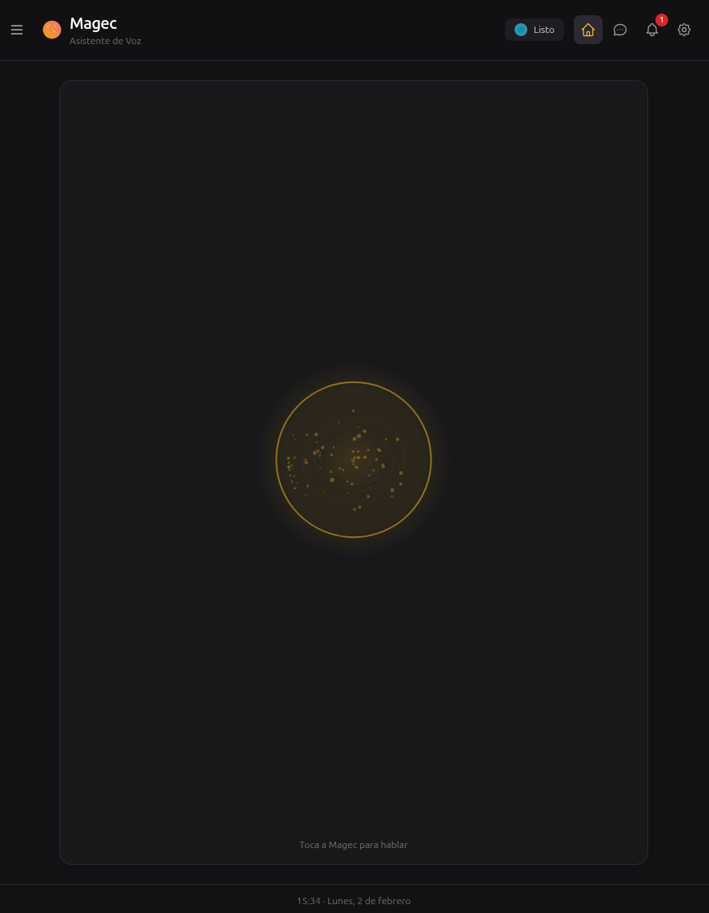
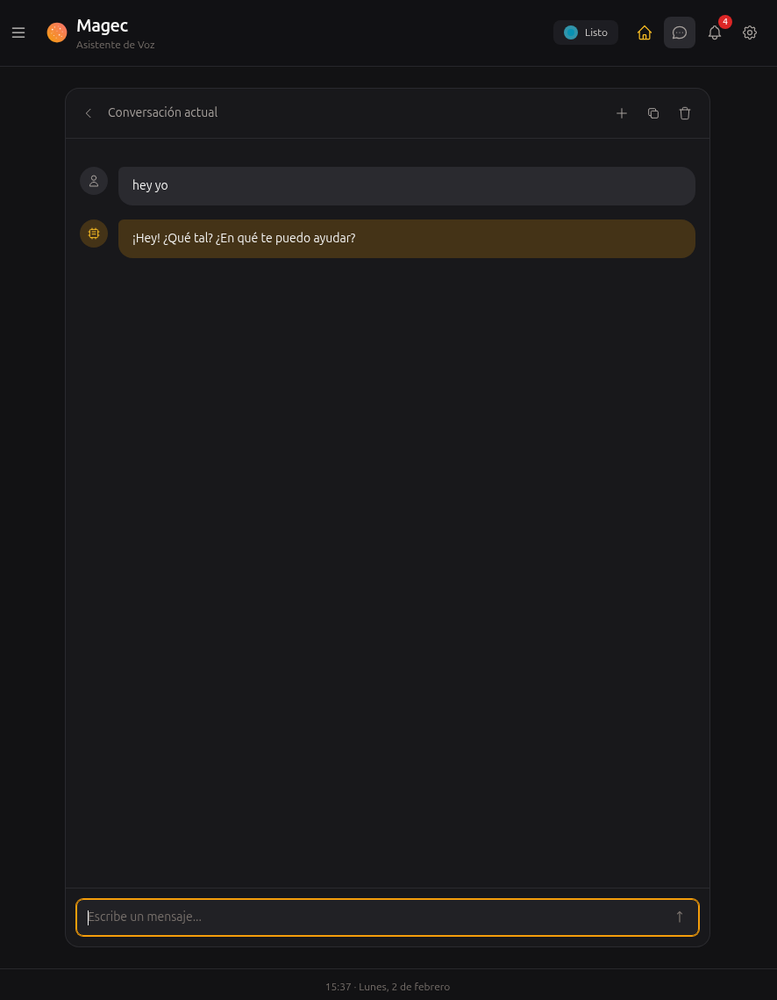
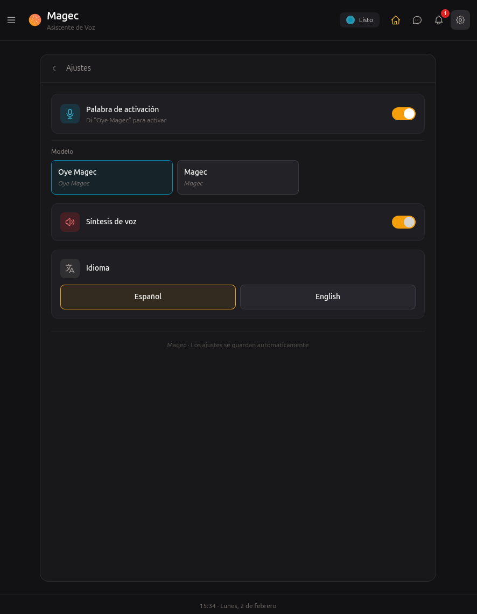
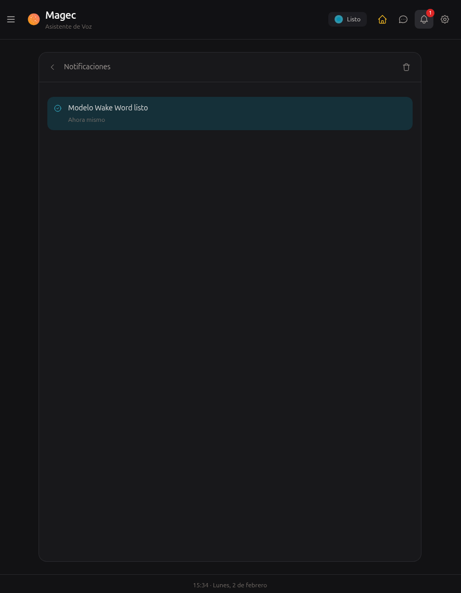

Your AI agents,
your rules.
Define multiple agents with their own LLMs, memory, and tools. Chain them into workflows. Access via voice, Telegram, webhooks, or cron. Manage it all from a visual panel.
$ git clone https://github.com/achetronic/magec.git
$ cd magec/docker/compose/fully-local
$ docker compose up -d
# Admin UI → http://localhost:8081
# Voice UI → http://localhost:8080
Everything you need to run AI agents
From single agents to complex multi-step workflows, with full control over every component.
Multi-Agent System
Define as many agents as you need, each with independent configuration.
- Per-agent LLM — different models and providers
- Per-agent memory — session (Redis) and long-term (pgvector)
- Per-agent voice — individual STT/TTS backends
- Per-agent tools — different MCP servers
- Hot-reload — no restart needed
Agentic Flows
Chain agents into multi-step workflows with a visual drag-and-drop editor.
- Sequential — run agents one after another
- Parallel — run simultaneously, merge results
- Loop — iterate until a condition is met
- Nested — combine any of the above
- Built-in: Research, Debate, Software Factory
AI Backends
Works with virtually any LLM provider — cloud or local.
- OpenAI — GPT-4.1, o3, whisper, tts
- Anthropic — Claude Opus, Sonnet, Haiku
- Google Gemini — Pro, Flash
- Ollama, LM Studio — run locally
- Any OpenAI-compatible API
Tool Integration (MCP)
Connect agents to external tools via the Model Context Protocol.
- HTTP and Stdio transport
- Per-agent tool assignment
- System prompt injection per MCP
- Home Assistant, GitHub, databases, and hundreds more
Memory
Agents remember context across sessions — short and long term.
- Session memory — Redis with configurable TTL
- Long-term — PostgreSQL + pgvector semantic search
- Per-agent configuration
- Auto-save — agents learn preferences over time
Voice Capabilities
Server-side voice processing powered by ONNX Runtime.
- Wake word detection — "Oye Magec"
- Voice Activity Detection (Silero VAD)
- Any Whisper-compatible STT
- Any OpenAI-compatible TTS
- WebSocket streaming for low latency
How it all connects
Clients on one side, AI backends on the other, Magec orchestrating in the middle.

Manage everything visually
7 resource types. Visual flow editor. Dynamic forms. Live health checks. Keyboard shortcuts.


Talk to your agents
Wake word, push-to-talk, animated orb, session management. Installable as PWA.




Multiple ways to reach your agents
Web app with wake word, push-to-talk, waveform visualizer, sessions. PWA.
Full management panel — agents, flows, backends, memory, tools, clients.
Text and voice messages. Response modes: text, voice, mirror, both.
HTTP endpoints with token auth. Passthrough or fixed commands.
Scheduled agent invocations with cron expressions.
Full API with Swagger docs. SSE streaming. WebSocket for voice.
Typed and ready, implementation pending.
Typed and ready, implementation pending.
Bring any model
Cloud APIs, local inference, or a mix. Each agent can use a different backend.
Running in 3 commands
Why "Magec"?
Magec (/maˈxek/) was the god of the Sun worshipped by the Guanches, the aboriginal Berber inhabitants of Tenerife in the Canary Islands. The name honors this Canarian heritage while reflecting the project's purpose: to illuminate and assist.